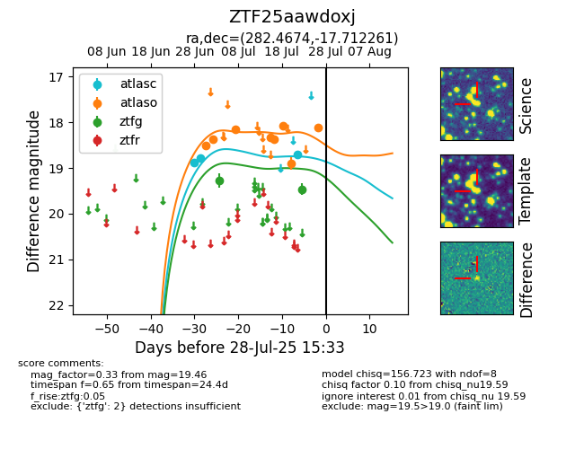

Target ZTF25aawdoxj at 2025-07-28 15:33, see:
FINK: fink-portal.org/ZTF25aawdoxj
Lasair: lasair-ztf.lsst.ac.uk/objects/ZTF25aawdoxj
ALeRCE: alerce.online/object/ZTF25aawdoxj
alt names
ZTF25aawdoxj (ztf,fink)
coordinates:
equatorial (ra, dec) = (282.4674,-17.71226)
galactic (l, b) = (16.8990,-7.63871)
photometry
last atlasc=18.70, atlaso=18.11, ztfg=19.46
3 atlasc, 8 atlaso, 2 ztfg detections
